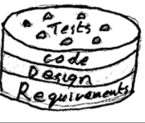

The main purpose of the book is teach you this skill. It is not easy. It
is a bit subjective, at first. But, it can be learned... You should
find that, at the end of the class, that it is quite rational and
explainable: we assigned the responsibility for zarking a widget to
objects in the Widget class because Widgets are the Experts.
They are listed opposite the inside of the front cover of the book... and
in my notes on the WWW. Look for "GRASP".
It proceeds from analysis to design to implementation -- with no feed back.
Opposite of looking at code to figure what is going on in the designer's and analysts'
minds: reverse engineering.
There is one example in the book for both Specification and Implementation Perspective. What is the obvious difference between the two that would make specification perspective seldom used and most software-oriented UML diagramming assume an implementation perspective?
Programmers really hate thinking about the real world and
hate writing (and reading) specifications. They seem to love
the code, the whole code, and nothing but the code??
In the software implementation for the dice example, how is the logic of the program depicted within the UML programming language? Or, it is just an abstraction of the software components?
In this book and course interaction diagrams will be used to express the
logic. UML2 sequence diagrams have enough features to express most any
logic you could want: iteration, selection, sequence, functions, arithmetic,
etc....
When one needs to express a complex algorithm in the UML we use
Activity diagrams. But these will not be required in this course.
Please explain the concept of patterns in more detail.
A pattern is a way to solve a class of problems. It resolves the conflicting
forces well enough for it to be useful. It should also work well
with other patterns to form a "Pattern Language".
The history starts with a set of patterns for architecture: rooms,
buildings, towns, ... by Christophe Alexander (circa 1979). One of
his patterns:
When adults enter a room they often need to put something down or pick it
up.
Children like to hid under things...
Therefore,
- Put a shelf around a room just above the height of a child and just below the hand of an adult.
For more checkout my website.
[ patterns.html ]
+++ A design class Diagram is derived from a set of interactions.
Perhaps some images may help. If I offered you a cake to eat...

Would you plan to eat it one layer at a time: (1) all the Requirements,
(2)all the Design, (3) Code it all and then (4) do
the tests:
[ cake2fragile.png ]
or in slices:
[ cake2agile.png ]
with a little bit of each layer and a test on top?
In this class I will covering a particularly flexible process for taking one slice at a time.
I implemented a Friendly Editor for my students in 10 weeks in the fall
of 1982, while bootstrapping the CSci dept, using a language I was
not familiar (BASIC) with, on a completely strange operating
system (RSTS).
This was only possible
because I started with a nearly empty program and grew it
one feature at a time.
Always remember that a phase can have several iterations in it. An iteration does not contain
any phases!
Each iteration has a mix of disciplines (requirements, domain, design, code) and
so a phase will have several repetitions of a little life cycle. However the mix of
disciplines tends to be different in each phase.
The PDFs of the text omit this image.
[ File:RUP_disciplines_greyscale_20060121.svg ]
[ File:RUP_Workflows2.gif ]
Also search Google for "RUP Image" for lots of similar processes.
"Activities such as load testing will prove if the partial design and implementation are on the right path." This seems to occur at a relatively early phase in the design process. Is an early prototype of the program created for users to test the program this early, or is this merely an invitation for users and stakeholders to witness the iterative development on paper (namely observation of the UML diagrams and Pseudocode)?
It should be a real, high quality, incomplete implementation that tests out the feasibility
of the approach.
Sadly in this class we won't get to this.
Table| Discipline | Inception | Elaboration | Construction | Transition
|
|---|
| Business Modeling | ** | ** | - | -
|
| Requirements | * | ** | * | *
|
| Design | * | * | ** | *
|
(Close Table)
The disciplines are like tools that are used in many phases.
However in the early phases we normally
do more business modeling and requirements
than Design and Implementation. In later phases this is
reversed.
What is a domain model and how does it relate to the UML process?
UML is not a process. It is a family of 13 types of diagram.
The process we will be learning is the Unified Process or UP.
UML is the "Unified Modeling Language". We use it to prepare
artifacts (documents). The UP will guide what diagram we will be drawing
at any particular time.
A Domain Model is also known as a Business Model. Creating and changing one
is part of the Unified Process. It describes the
real world that your software will interact with. A full business model
will include many kinds of diagrams and text documents describing how
the business works, the data that it uses, the hardware and software
platforms to be used. It should also have a conceptual class diagram
that summarizes the kinds of things and relationships between them that
are important to the stakeholders.
In this course we will often refer to the conceptual model (classes of
real objects and their relationships) as "The Domain Model". It will
be an important source for the classes that we put into our designs.
In other words, real world ideas (domain model) will inspire the structure
(Design class diagrams) of our software. As a result, the software should
(1) fit the world better, (2) be easier to understand, and (3) be easier
to change when the world makes a small change.
The way these artifacts(documents) fit together is shown inside the front
cover of the hardback edition of our text book.
How would you estimate what the proper time would be for the iteration period?
Each project and each iteration may have a different deadline.
There are no simple and accurate rules. I like short deadlines -- in senior projects
I ask students to show me what they have got every week -- verbal report. What works?
What can you do next week. This is the best length for college work. Similar to
the XP weekly cycle. Most methodologists think 1 week is too short.
The time for an iteration should be enough to analyze, design, implement, and test
something.
Key point: fix length and then choose what to do in it.
The simplest rule I know is to use past performance to predict the future.
Suppose you already have implemented a dozen similar
features and they have each taken an average of one 40 hour week... then
adding another similar feature should take another 40 hour week. So with a two week
iteration -- add two such features.
I understand the idea of the waterfall cycle (process) but i don't
understand how that name describes or even relates to my understanding of
the waterfall cycle. Is it because you don't see it coming when you start?
Interesting question. It comes from a paper by
Winston Royce
"Managing the development of large software systems"
(Proc IEEE WESCON (1970) pp328-339)
which had a picture with data flowing down from analysis to Design etc.
like water down a series of steps...
[ royce.waterfall.pdf ]
(PDF). Oddly the paper is arguing that the
waterfall process can not work.
Instead Royce proposed the ideas of iteration, prototyping,
and starting with code. People ignored this part of his message.
Why is it that iterative projects with a "waterfall" influence are likely doomed to failure as if they were strictly waterfall projects?
They loose the feedback from implementing and testing. A recent government project
had to tams working in parallel. At the the end of 18 months the agile team had
80% of the project running, the waterfall team had not finished the specification.
Are their any other systems besides UML that can model software development? If so what are their names?
Yes -- but they have died.... HOOD, OPEN, ... see
[ ../samples/methods.html ]
How is it determined....which requirements are going to be done at a particular iteration?
Look at the risks involved -- tackle the riskiest thing first.
Do you know of any software development company that actually was successful using the waterfall method?
None come to mind.... but dozens of simple projects are done in one iteration = waterfall.
However, Alistair Cockburn, who has done a lot of consulting on large scale projects,
has observed successful projects using any process! He also seen all processes fail.
He writes
- The people on the projects were not interested in learning our system.
- They were successfully able to ignore us, and were still delivering software, anyway.
- Almost any methodology can be made to work on some project.
- Any methodology can manage to fail on some project.
- Heavy processes can be successful.
- Light processes are more often successful, and more importantly, the people on those projects credit the success to the
lightness of the methodology.
[Cockburn00]
I'm having trouble understanding the difference between unified process and rational unified process can you explain the differences
They have the same philosophy, phases, and come from similar experiences.
The differences are:
- RUP is more complex and complete -- more disciplines are involved.
- You buy RUP from IBM.
- I don't think Craig Larman is licensed to teach RUP.
There are more disciplines involved in the RUP:
[ File:RUP_disciplines_greyscale_20060121.svg ]
[ File:RUP_Workflows2.gif ]
and
[ rup_discipline.jpg ]
(if this is Bad link - try Google Images and search for RUP)
You can compare the UP and RUP with Barry Boehm's
iterative
Spiral process
[ spiral.gif ]
which, may still abandon work on requirements too early...
UP is described a method as well as XP and SCRUM. Can UP be considered then a model or a framework? Can these adjectives be used interchangeably to describe those interactive processes?
The author does not clarify the terms. It is a bit confusing!
Model, Method, Framework, Process?